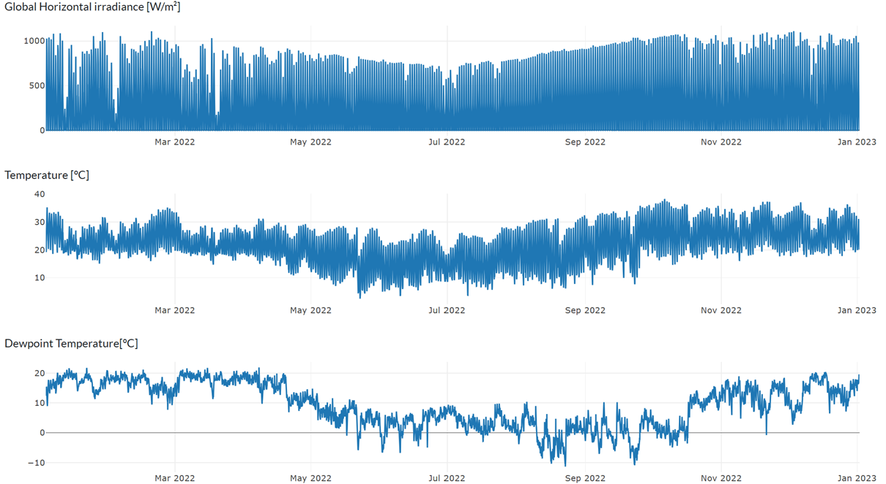
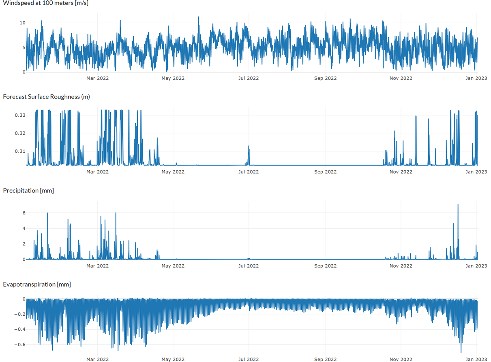
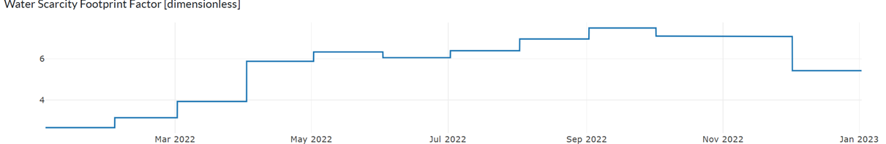

{% load static %}

<main>
    <div>
        <p>
            In the step “Resource Mapping”, site-specific data for climate and hydrology are retrieved
            for the indicated geographic location, relying on a digital data collection method . The data is provided in
            hourly resolution for global horizontal irradiance [W/m²], Temperature [°C],
            Dewpoint Temperature [°C], Windspeed at 100 meters [m/s], Forecast Surface Roughness [m],
            Precipitation [mm], and Evapotranspiration [mm]. Moreover, the water scarcity footprint factor is provided
            in a monthly resolution. By default, data for one year in hourly resolutions is displayed.
            Zooming in allows detailed analysis of a shorter time horizon (e.g., one week or one day). Below you can
            find a screenshot of the step “Resource Mapping”, visualizing the site-specific data for the case study
            of Tsumkwe. To ensure data availability without dependency on API tokens, change of download regulations,
            or external server authentication (e.g., as is the case for Copernicus or Google Earth Engine),
            all global datasets have been downloaded and hosted on a server of the Reiner Lemoine Institute (RLI).
        </p>
        <p>
            
            
            
        </p>
    </div>
</main>
